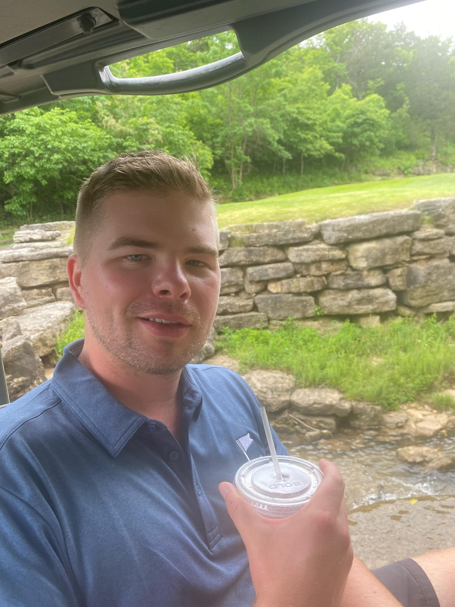

Player Details
Bio
The Numbers
Stats
Tournament & Match Play
Competition
Match Play Record
2-3-10.417 winning percentageBest Ball Record
4-1-10.750 winning percentageOverall Record
6-4-20.583 winning percentageRound-by-Round
Individual Results
Select a year to view every recorded BGW round. Match opponents and results are shown when applicable.
| Course | Score | Opponent | Result |
|---|---|---|---|
| Buffalo RidgeClassic | Gross98Net80 | Matt Fiore | W — 5&3 |
| Ozark NationalClassic | Gross94Net76 | Jared Powell / Matt Fiore | W — 5&3 |
| Mountain TopPar 3 (13 Hole) | Gross—Net— | — | — |
| Payne's ValleyClassic | Gross93Net73 | — | 2 |
Trend Line
Handicap History
Hardware